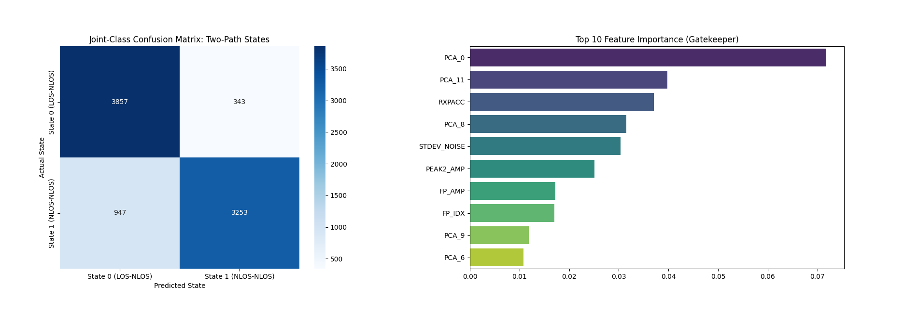

Warehouse UWB Localization Analytics
A Year 2, Trimester 2, 2026 Data Analytics mini-project completed by a team of five students, using feature engineering, PCA, Random Forest classification, and multi-output regression to model LOS/NLOS UWB signal behaviour for warehouse robot localization.

This project addressed a warehouse-localization problem where autonomous robots rely on Ultra-Wideband (UWB) anchors for indoor positioning, but signal quality degrades when the robot moves into LOS/NLOS and NLOS/NLOS conditions around dense metal shelving. Instead of treating reflected paths as useless noise, the project modeled multipath behaviour directly so the signal could still carry useful information for navigation.
The workflow combined signal processing and machine learning. We merged all seven dataset parts, checked missing values and outliers, standardized the feature space, preserved FP_IDX for later signal analysis, extracted the second dominant CIR peak, and reduced the original 1,017 CIR dimensions using PCA while retaining 95% of the variance. That gave the downstream models both engineered radio features and compressed waveform patterns to work with.
The final solution used a Random Forest classifier as a gatekeeper for two-path state prediction and a multi-output Random Forest regressor to estimate both direct-path and reflected-path distances. My contribution was on the data-preparation side, especially cleaning and preparing the pipeline inputs before the later PCA and modeling stages.
Problem and idea
- Focused on indoor localization for warehouse robots, where metal shelving creates mixed LOS and NLOS propagation conditions that distort raw UWB ranging.
- Reframed the problem as two linked analytics tasks: classify the propagation state first, then estimate both direct-path and reflected-path distances more reliably.
- Used a hybrid two-path approach so reflected signals were modeled explicitly instead of discarded as noise.
Data pipeline
- Merged seven dataset parts into one full dataset, audited missing values and outliers, and applied z-score normalization while preserving key columns such as FP_IDX.
- Engineered multipath features by detecting the second dominant CIR peak after the first-path index, producing PEAK2_POS and PEAK2_AMP.
- Reduced 1,017 CIR features to 860 principal components while retaining 95% of the variance, then combined those components with 12 structured radio features and the two engineered peak features.
Modeling approach
- Used a 300-tree Random Forest classifier with balanced class weighting as a gatekeeper to distinguish State 0 (LOS-NLOS) from State 1 (NLOS-NLOS).
- Used a multi-output Random Forest regressor to predict both Path 1 direct distance and Path 2 reflected distance in parallel.
- Built the workflow around feature engineering, ensemble learning, and dimensionality reduction rather than relying on a single raw-distance baseline.
Results
- The classifier achieved 84.64% accuracy with an AUC of 0.8941, showing strong overall separation between the two signal states.
- The confusion matrix showed 3,857 correct State 0 predictions and 3,253 correct State 1 predictions, but also highlighted a more serious weakness: 947 missed obstructions where NLOS was treated as clear.
- The regressor reached test RMSE values of 1.4065 m and 1.4189 m for the direct and reflected paths, with R-squared values of 0.6402 and 0.6550 respectively.
What the plots showed
- Feature-distribution boxplots confirmed that engineered and radio features such as FP_AMP1, STDEV_NOISE, MAX_NOISE, and RXPACC carried useful class-separation information.
- The feature-importance ranking showed that several PCA components, along with RXPACC, noise metrics, and second-peak amplitude, were key decision drivers for the classifier.
- Residual plots showed a funnel shape, meaning prediction error grew at longer distances, which matches the expected behaviour of UWB systems under stronger attenuation and multipath effects.
My contribution
- Handled the cleaning of data preparation portion of the project, which is how the report listed my role in the team breakdown.
- Worked on the early preprocessing flow, including combining dataset parts, auditing missing values and outliers, and helping prepare the feature set for the later PCA and modeling stages.
- Contributed to the part of the workflow that made the downstream classifier, regressor, and visualizations possible by keeping the data pipeline structured and consistent before modeling.
Limitations and learning
- The report notes moderate generalization rather than perfect robustness, especially at longer ranges where residual spread and prediction error increased.
- One key takeaway was that strong average metrics are not enough on their own when the cost of missed obstructions is high in a navigation setting.
- Future improvements suggested in the report included collecting more long-range samples and exploring distance-weighted training to improve robustness across the warehouse operating range.
Tools and concepts
Project material
This page is based on the submitted mini-project report, especially the problem analysis, data-preparation pipeline, modeling sections, and plots/results pages.